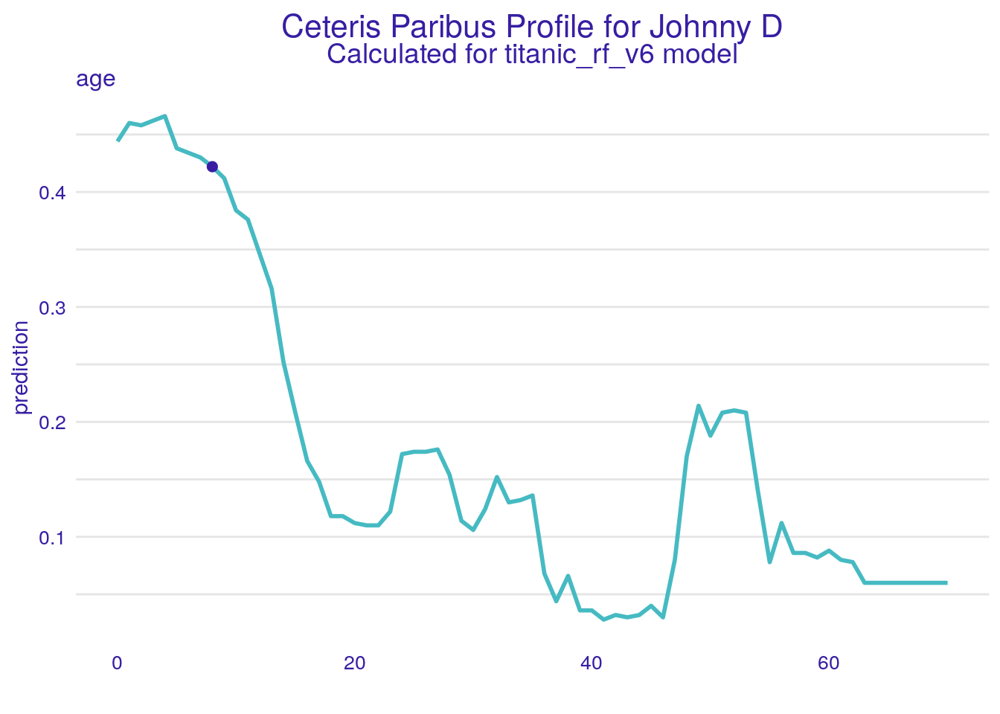
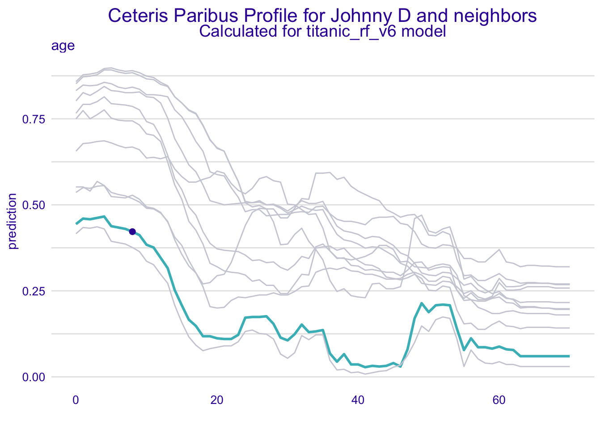

Chapter 7 Local diagnostic with Ceteris-Paribus profiles
7.1 Introduction
What do you think, is it possible that model is good on average but terrible for some observations?
I think that most of us would agree. But how we can check if a single prediction is ,,unlucky’’? In this chapter we present two techniques for local model diagnostic that are based on Ceteris Paribus Profiles.
It may happen that global performance of the model is good, while for some particular observations the fit is very bad. Local fidelity helps to understand how good is the model fit at a particular observation. In this section we show how to use Ceteris Paribus profiles to validate local model fidelity.
The idea behind fidelity plots is to select a number of observatons (“neighbors”) from the validation dataset that are closest to the observation of interest. Then for the selected observations we plot CP profiles and check how stable they are. Additionally, if we know true values of the dependent variable for the selected neighbours, we may add residuals to the plot to evaluate the local fit of the model.
7.2 Intuition
We want to diagnose model behavior around a single instance prediction.
One approach to local model validation is to examine how model behaves for points from training data. See for example profiles presented in Figure 7.1. Ceteris Paribus Profiles are almost parallel and close to each other what suggests that model is stable around the point of interest.
It looks like small changes in the model input (represented by nearest neighbors) do not influence model response in an unpredicted way.

Figure 7.1: (fig:profileWith10NN) Ceteris-paribus profiles for a selected instance (dark violet line) and 10 nearest neighbors (light grey lines). Note that these profiles are almost parallel and close to each other what suggests the stability of the model. This example is based on the titanic_rf_b6 model and the titanic dataset
Once we consider nearest neighbors we can also look closer on the model fit around a specific point of interest. See for example the Figure 7.2. The back-to-back histogram shows distribution of residuals for the whole validation data and selected neighbors.
Distribution of residuals for the whole validation dataset is rather symmetric and centered around 0. Residuals for neighbors are centered on 500, what means that the average model bias around the point of interest is close to 500.
In the figure we showed an example in which residuals for nearest neighbors are larger than average residuals. Thus the local model fit is smaller than the global model fit.

Figure 7.2: (fig:profileBack2BackHist) Back-to-back histograms for residuals calculated with the apartments_rf_v5 model on apartments data. Upper panel correspond to residuals calculated for all observations in the validation dataset while the bottom panel correspond to residuals calculated for nearest neighbors. Their residuals are higher than average model residuals.
7.3 Method
Local diagnostic is based on three elements.
- identification of nearest neighbors,
- calculation and visualization of Ceteris Paribus profiles for selected neighbors,
- analysis of residuals for nearest neighbors.
Let us discuss them point by point.
7.3.1 Nearest neighbors
How many nearest neighbors shall we choose and what metric can we use?
Answer for both questions is of course it depends.
- The smaller the number of neighbors is the more local is the analysis. But very small numbers lead to larger variability of the diagnosis. The default value in the
select_neighbours()function isn = 20. - The distance measure if very important. The higher the dimension the more crucial is this choice. For tabular data we additionally need to face a problem of different distributions of different features. The default choice in the
select_neighbours()function is to usedistance = gower_dist()function from thegowerpackage (van der Loo 2017). The Gower distance is an average from normalized distances \(d_k()\) calculated for particular features.
\[
d_{gower}(x^i, x^j) = \frac 1p \sum_{k=1}^p d_k(x_k^i, x_k^j).
\]
* Distance can be calculated based on selected variables. In the select_neighbours() function one can specify them in the variables argument.
7.3.2 Profiles for neighbors
Once nearest neighbors are identified we can compare Ceteris Paribus profiles for selected variables.
If the number of features is large, then we can easily end up with bunch of very similar small plots with spaghetti profiles. Better strategy would be to focus only on profiles for the k-most important features. In this chapter we show profiles only for a single variable. This makes examples easier to read without reducing the generality.
For better readability we show only profiles for continuous variables.
7.3.3 Residuals
Ceteris Paribus profiles that assess model stability. In addition we can add examination of the local residuals that assess local model fit.
Residuals for observation \(x^i\) are here defined as the difference between the observed \(y^i\) and predicted \(x^i\), that is
\[ r^i = y^i - f(x^i). \]
7.3.4 Local Fidelity Plot
Both residuals and Ceteris Paribus Profiles for nearest neighbors can be presented in a single plot, called Local Fidelity Plot. See an example in the Figure 7.3.
Such plots are complex as they convey lots of information. Yet it is not that hard to learn how to read this information.
The Figure 7.3 shows meaning of every element of the plot. For a single instance, here the passenger Johnny D, we can read how large are residuals for its neighbor, whatever residuals are biased or symmetric, if Ceteris Profiles are stable and parallel.
Figure 7.3: (fig:localFidelityPlots) Elements of Local Fidelity Plots. Vertical intervals correspond to residuals, the smaller the more accurate is the model. Residuals are color coded, so we can easier recognized if they are biased or not, here there are balanced. Ceteris Paribus Profiles for neighbors are marked with grey lines. Stable model will have profiles close to each other; additive model will have parallel lines.
7.4 Pros and cons
Local diagnostic plots may be very helpful to validate if
- model is additive locally (CP profiles are parallel),
- model is stable locally (CP profiles are close to each other),
- local fit is good (residuals are small and symmetric).
The drawback is that such plots are quite complex and lack objective measures for quality of fit. As most diagnostic tools it’s suited for exploratory analysis.
7.5 Code snippets for R
In this section we show how to use an R package ingredients (???) for the Local Fidelity Plots. More details and examples can be found at https://modeloriented.github.io/ingredients/.
In this section we use a random forest (Breiman et al. 2018) model titanic_rf_v6 developed for the Titanic dataset (see Section @ref{model_titanic_rf}). In particular, we deal with a binary classification problem - we want to predict the probability of survival for a selected passenger.
titanic <- archivist::aread("pbiecek/models/27e5c")
titanic_rf_v6 <- archivist::aread("pbiecek/models/31570")library("DALEX")
library("randomForest")
explain_titanic_rf <- explain(model = titanic_rf_v6,
data = titanic[,-9],
y = titanic$survived == "yes",
label = "Random Forest v6")Local diagnostic is specified for an instance. Let us define a new observation - 8 years old Johnny D, male passenger of the 1st class.
johny_d <- data.frame(
class = factor("1st", levels = c("1st", "2nd", "3rd", "deck crew", "engineering crew",
"restaurant staff", "victualling crew")),
gender = factor("male", levels = c("female", "male")),
age = 8,
sibsp = 0,
parch = 0,
fare = 72,
embarked = factor("Southampton", levels = c("Belfast", "Cherbourg", "Queenstown", "Southampton"))
)7.5.1 Start with Ceteris Paribus Profile
First we will plot a Ceteri Paribus Profiles for the observation of interese.
library("ingredients")
library("ggplot2")
cp_johny <- ceteris_paribus(explain_titanic_rf, johny_d, variable_splits = list(age = 0:70))
plot(cp_johny) +
show_observations(cp_johny, variables = "age") +
ggtitle("Ceteris Paribus Profile for Johnny D","Calculated for titanic_rf_v6 model")
In the model chances of survival diminish with age. Johnny D is lucky to have chances higher than 50%.
7.5.2 Add profiles for neighbors
Second we need to identify neighbors and plot their profiles.
johny_neighbors <- select_neighbours(titanic, johny_d, n = 10, variables = c("age", "class", "gender"))
cp_johny_neighbors <- ceteris_paribus(explain_titanic_rf, johny_neighbors,
y = johny_neighbors$survived == "yes",
variable_splits = list(age = 0:70))
plot(cp_johny) +
show_profiles(cp_johny_neighbors, color = '#ceced9') +
show_observations(cp_johny, variables = "age") +
ggtitle("Ceteris Paribus Profile for Johnny D and neighbors","Calculated for titanic_rf_v6 model")
Almost all profiles behave in a similar way. The relation between age and model response is on average decreasing for almost every neighbor.
7.5.3 Add residuals for neighbors
And the last step is to add lines for residuals.
plot(cp_johny) +
show_profiles(cp_johny_neighbors, color = '#ceced9') +
show_observations(cp_johny, variables = "age") +
show_residuals(cp_johny_neighbors, variables = "age") +
ggtitle("Local Fidelity Plot for Johnny D","Calculated for titanic_rf_v6 model")
Added residuals works increase the trust in this model. Neighbors that in fact died have lower profiles while neighbors that survived have predictions higher than 50%.
References
van der Loo, Mark. 2017. Gower: Gower’s Distance. https://CRAN.R-project.org/package=gower.
Breiman, Leo, Adele Cutler, Andy Liaw, and Matthew Wiener. 2018. RandomForest: Breiman and Cutler’s Random Forests for Classification and Regression. https://CRAN.R-project.org/package=randomForest.